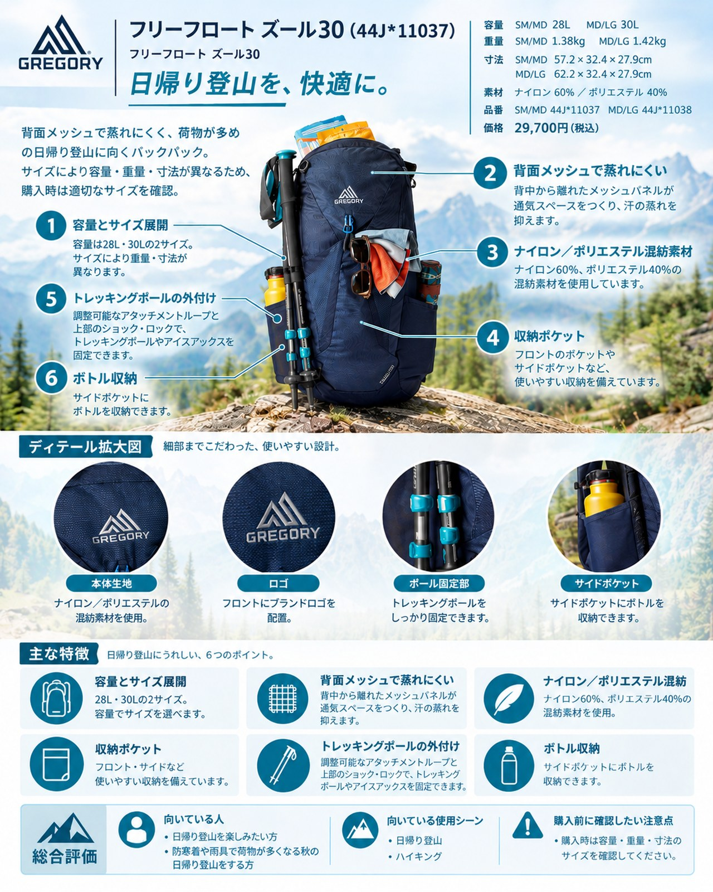

秋の山は、日なたを歩く登りでは汗をかき、稜線や休憩中には一気に冷える季節です。天気も変わりやすく、日帰りでも防寒着と雨具は欠かせません。荷物が少し増えるこの時期に、背中の蒸れを抑えながら重めの荷物を安定して運びたい人に向くのが、グレゴリーの「フリーフロート ズール30」です。今回はこのザックを、秋の日帰り登山や小屋泊の手前くらいの山行を想定して紹介します。
基本スペック
※価格・仕様は2026年10月12日時点のグレゴリー公式オンラインストアの表示です。適合する背面長は日本の公式ページに記載がなく、米国REIの商品ページではSM/MDが15〜19インチ、MD/LGが18〜22インチと案内されています。
| 項目 | SM/MD | MD/LG |
|---|---|---|
| 品番 | 44J*11037 | 44J*11038 |
| 商品コード | GR-145664 | GR-145291 |
| 容量 | 28L | 30L |
| 重量 | 1.38kg | 1.42kg |
| 寸法 | 57.2 x 32.4 x 27.9cm | 62.2 x 32.4 x 27.9cm |
| 素材 | ナイロン60%、ポリエステル40% | ナイロン60%、ポリエステル40% |
| 価格 | 29,700円（税込） | 29,700円（税込） |
背中から離れたメッシュで蒸れにくい
背面システムは公式ページで「フリー・フロート・ダイナミック・サスペンション」と紹介されています。背中に当たるメッシュとザック本体の間に空間ができる作りで、複数のレビューが通気性の良さを評価しています。OutdoorGearLab（2021年のレビューで、その後のモデル更新前の可能性があります）は湿度の高い山での試験で通気性の高さを長所に挙げ、CleverHikerも背面メッシュパネルのおかげで、しっかりしたフレームがありながら通気が確保されているとしています。登りで汗をかき、止まると冷える秋の山では、背中が濡れにくいことが体の冷えを防ぐことにもつながります。
重めの荷物でも安定する背負い心地
ハーネスにはライフスパンEVAフォームが使われ、通気孔も設けられています（公式ページより）。CleverHikerは背負い心地を高く評価しており、荷重が増えても肩への負担が集中しにくく、背面長の調整やロードリフターで細かく合わせられる点を挙げています。防寒着やレインウェア、温かい飲み物まで入れると荷物が重くなりがちな秋の日帰りでは、この安定感が生きます。
ポケットが多く、出し入れしやすい
公式ページによると、特大サイズのヒップベルトポケット、キークリップと内部セキュリティーポケット付きのジッパー式トップポケット、両サイドのストレッチメッシュポケット、バックル開閉式のフロントのストレッチメッシュポケットを備えます。サイドポケットはコンプレッションストラップをポケットの上下どちらにも通せるので、ボトルを出し入れしやすくする使い方もできます。脱いだ中間着や行動食を、ザックを下ろさずに出し入れできるのは便利です。
ポールやピッケルの固定、ハイドレーションにも対応
調整可能なアタッチメントループと上部のショック・ロックでトレッキングポールやアイスアックスを固定できます。ハイドレーション・スリーブも備え、グレゴリーの3Dハイドロリザーバー（別売り）に対応しています。
デメリット・注意点
- 日帰り用ザックとしては重い：SM/MDで1.38kg、MD/LGで1.42kgあります。OutdoorGearLabは重量の項目を低く評価し、CleverHikerも「最も重く、圧縮しにくいデイパック」の一つとしています。荷物が少ない日には、本体の重さや大きさが気になるという指摘もあります。
- トップポケットに物を詰めると扱いにくい：CleverHikerは、上部のポケットに物を入れると蓋が重くなり、開け閉めがしにくくなる点を挙げています（このレビュー単独の指摘です）。
- レインカバーは別に用意したい：日本の公式ページの仕様欄にはレインカバーの記載がなく、米国REIの商品ページでは「付属なし」とされています。天気が変わりやすい季節なので、ザックカバーかスタッフバッグでの防水を別に考えておきましょう。
- サイズ選び：REIの商品ページでは、レビューに基づくと「やや大きめ」と表示されています。2サイズあるので、購入前に店舗で背負って確かめるのがおすすめです。
向いている人・向いていない人
◎向いている人
- 汗をかきやすく、背中の蒸れが気になる人
- 防寒着や雨具を入れて、荷物が重めになる秋の日帰り登山をする人
- ポケットで小物を整理しながら歩きたい人
△向いていない人
- ザックの軽さを最優先したい人
- 荷物が少ないハイキングが中心の人
- 機能の少ないシンプルなザックが好みの人
まとめ
フリーフロート ズール30は、背中から離れたメッシュによる通気性と、重めの荷物でも崩れにくい背負い心地が持ち味の30Lクラスのザックです。重さは日帰り用としては目立つものの、防寒着や雨具が増える秋の山行では、その安定感と蒸れにくさがメリットになります。容量はSM/MDが28L、MD/LGが30Lと異なるので、サイズは背面長に合わせて選びましょう。
この記事で紹介した商品
価格・重量・在庫は各ブランド公式サイトの記載（確認日つき）にもとづきます。商品を押すと、購入先を選べます。
この記事にはアフィリエイト広告が含まれます。リンク先での購入により、当サイトが報酬を受け取る場合があります。山行の前には、最新の気象とルートの状況を必ずご確認ください。